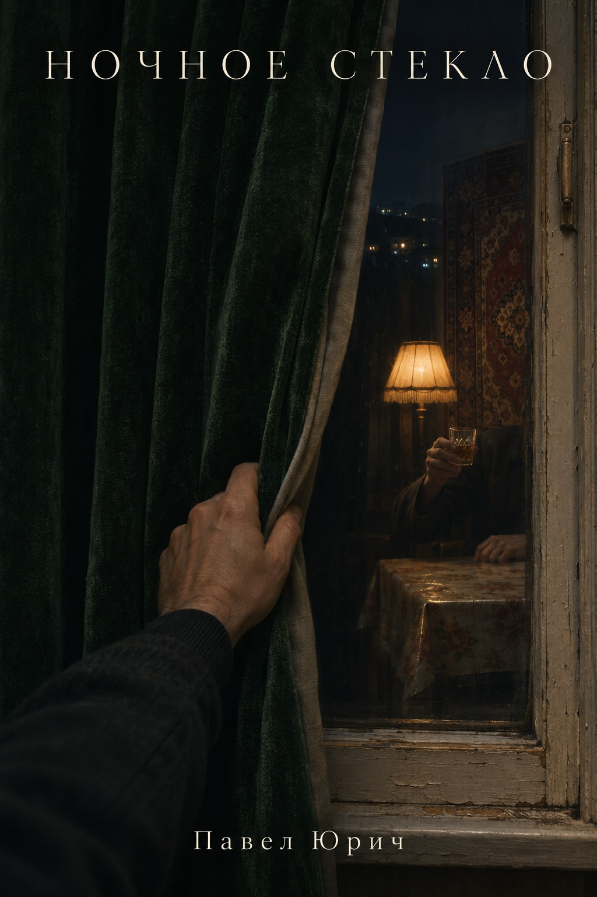

Ночное стекло

1
Квартиру Илья нашёл за два дня, и понравилась она ему тем, что на фотографиях в ней никто никогда не жил. Белые стены, серый диван с жёсткими подушками, кухонный остров с тремя высокими табуретами, торшер на гнутой ноге и окно во всю стену, за которым ничего не было, кроме неба и далёких холмов. Девятнадцатый этаж нового дома в Сабуртало, за метро «Медицинский университет». В объявлении было написано: «Квартира в стиле Пинтерест, вся техника новая, вид на телебашню».
Хозяйка, Нино, встретила его у подъезда сама. Быстрая молодая женщина с ключами в одной руке и телефоном в другой, она говорила по-русски с той старательной правильностью, с какой говорят люди, выучившие язык не дома, а на курсах. Холодильник ещё стоял в заводской плёнке, на варочной панели висела бумажная бирка, у дивана лежала инструкция к пылесосу-роботу, которую никто не открывал.
— Шторы не вешаем, — сказала Нино, когда он спросил. — Они вид портят. Тут все так живут, не волнуйтесь, напротив никого нет, только небо.
На острове стояла бутылка саперави с бантиком на горлышке.
— Это от нас. У нас так принято, гостю вино.
Он поблагодарил и не сказал, что не пьёт. Сказать это вслух в чужой стране незнакомой женщине, которая улыбается ему как гостю, показалось глупо, почти невежливо. Нино уехала, и дальше всё пошло через WhatsApp: голосовые сообщения, фотографии счётчиков, кружочки с её быстрым лицом на фоне чужих кухонь.
Вечером он долго сидел на диване и смотрел, как над холмами темнеет. Телебашня на Мтацминде зажглась красными и белыми огнями, внизу потекли фары по проспекту, и квартира, пустая и чистая, стала ещё чище, потому что в темноте пропали даже те мелочи, которые он успел разложить. В приложении на телефоне висела цифра — сто двенадцать дней. Он считал их с той пятницы в Москве, после которой в его жизни почти ничего не осталось: ни работы, ни Лены, ни права звонить сыну без предупреждения.
Бутылка стояла на острове. Он подумал, что здесь вино — это не то, что было там. Здесь его пьют с хлебом и сыром, за столом, медленно, это культура, а не способ выключиться. Он подумал ещё, что сто двенадцать дней — это доказательство: он умеет остановиться, значит, умеет и выпить один бокал, по-человечески, за новую жизнь. Штопор нашёлся в ящике, тоже в плёнке.
Вино оказалось густым и тёплым, с косточковой горечью. Он выпил бокал, налил второй, но второй пить не стал, вылил в раковину и почувствовал себя человеком, который умеет вовремя остановиться.
Когда совсем стемнело, окно перестало быть окном. Город провалился куда-то вниз, остались только его огоньки, а поверх них во всю стену встала комната: диван, торшер, белый остров и он сам, с пустым бокалом, который забыл поставить. Илья поднял бокал, как поднимают на тосте, просто так, для себя.
Тот, в стекле, поднял бокал чуть позже. Совсем чуть-чуть, на ту долю секунды, на которую в плохом видеозвонке запаздывает собеседник.
Илья опустил руку, и отражение опустило, тоже с опозданием. Он усмехнулся. Двойной стеклопакет, усталость, перелёт, два часа сна в аэропорту Еревана. Он пятнадцать лет писал код и знал, что любая задержка объяснима: буфер, сеть, перегруженный процессор. Перегруженным процессором сегодня был он сам.
Он лёг спать и бутылку на острове не убрал.
2
В октябре в Кахетии собирали виноград, и это слово, ртвели, он услышал раз двадцать за месяц, сначала от Нино, потом от соседа по площадке. Сосед, Гия, крупный, седой, громкий, возил вино из своей деревни в пятилитровых канистрах и в первую же субботу постучал к Илье без всякого повода.
— Ты один, я один, жена у дочки в Батуми. Пошли, посидим.
Посидели на балконе у Гии, где на клеёнке лежали хлеб, сыр, зелень, какие-то орехи в чём-то сладком, и Гия говорил тосты. За мир. За родителей. За тех, кого с нами нет. За Россию, но не за ту, а за другую, за ту, где Пушкин. За Илью, который приехал. Пили из маленьких гранёных стаканов, до дна, потому что тост, а за тост не допить нельзя, Гия объяснил это так ласково и подробно, что Илья не стал спорить. Он вернулся к себе за полночь, осторожно, по стенке, и долго стоял перед тёмным окном, глядя, как его отражение медленно, с опозданием в полсекунды, вытирает рот ладонью.
Дальше было легко. На Дезертирском рынке, куда его однажды отвёз Гия, вино продавали в пластиковых бутылках из-под лимонада, домашнее, мутноватое, по цене московского кофе. Илья покупал две по два литра и говорил себе, что этого хватит на неделю. Хватало на три вечера. Потом появилась чача: Гия налил на пробу из бутылки без этикетки, и она оказалась чистой и жгучей, как спирт в медкабинете, и после неё ничего уже не болело. Потом внизу, в доме, открылся круглосуточный магазинчик, где продавщица в розовом свитере на второй неделе начала узнавать его и, не спрашивая, ставила на прилавок то, что он брал всегда.
Работать он продолжал. Компания была кипрская, команда разбросана по пяти странам, созвоны утром, и утром он был собран, выбрит, внятен. Пил он вечером, когда закрывал ноутбук и квартира делалась тёмной и большой. Пил у окна, потому что больше было негде: диван стоял к окну лицом, табуреты у острова тоже были развёрнуты к стеклу, вся эта квартира была устроена так, чтобы на неё смотрели и чтобы из неё смотрели.
Квартиру он держал в чистоте, как на фото. Посуду мыл сразу, крошки смахивал, подушки на диване взбивал по утрам. Пустые бутылки собирал в чёрный пакет и выносил ночью, когда лифт был пуст, и не в свой контейнер, а через дорогу, во двор старой пятиэтажки, где баки стояли под шелковицей и где его никто не знал.
Опоздание росло. Сначала полсекунды, потом секунда. Однажды ночью, стоя у окна с телефоном, Илья решил проверить: включил камеру, навёл на стекло, поднял руку. На экране отражение подняло руку одновременно с ним, точно, без всякой задержки. Он посмотрел поверх телефона в само стекло, и там рука ещё только шла вверх.
Он выключил камеру и долго сидел на табурете. Значит, не стекло. Значит, глаза или голова. Он загуглил «задержка зрительного восприятия алкоголь», прочитал что-то про мозжечок и про реакцию, закрыл вкладку и налил ещё, потому что читать про мозжечок было страшнее, чем пить.
3
В ноябре он проснулся среди ночи от жажды. В квартире было тихо, робот-пылесос спал на своей базе, мигая синим глазом. Илья прошёл к острову за водой, и окно, как всегда, встретило его комнатой.
В комнате на диване сидел он сам и говорил по телефону.
Он стоял со стаканом в руке и смотрел. Тот, в стекле, сидел, наклонившись вперёд, локтями в колени, и прижимал телефон к уху. Губы его двигались, свободная рука то сжималась, то разжималась, один раз он закрыл ею лицо и долго так сидел, и плечи у него дёргались. Илья медленно повернул голову к дивану. Диван был пуст, подушки взбиты.
Он снова посмотрел в окно. Тот, на диване, опустил телефон и посмотрел прямо на него, через всю комнату, сквозь стекло, мутным больным взглядом. Потом лёг и отвернулся к спинке.
Утром телефон лежал на зарядке, где ему и положено. Илья открыл журнал звонков, потому что не мог не открыть. В 3:14 исходящий, Лена, сорок одна минута. В 4:02 исходящий, Миша, ноль минут ноль секунд, не дозвонился. В 4:03 ещё раз Миша. В 4:05 ещё.
Он не помнил ничего: ни звонка, ни голоса Лены, ни того, что набирал сына. Он помнил, что вечером было две бутылки с рынка и что он смотрел какой-то сериал, а потом сериал кончился, а потом было утро.
В девять пришло сообщение от Лены. Без «привет», без точки в конце.
«Илья пожалуйста больше не звони мне ночью. И Мише не звони. Он вчера до утра не спал»
Он ответил «прости», и сообщение повисло непрочитанным. Он сидел с телефоном у тёмного по-утреннему окна, в котором отражалось только серое небо, и думал о том, что тот, на диване, плакал. Думал, что видел это так, как не видел бы никогда, если бы был внутри: со стороны, через всю комнату, в профиль.
4
Он стал меньше смотреть в окно. Это оказалось трудно, почти невозможно: в квартире, где всё развёрнуто к стеклу, некуда отвести глаза. Он написал Нино про жалюзи. Нино ответила длинным голосовым, в котором было много ласковых слов и одно твёрдое: сверлить нельзя, стеклопакет на гарантии, застройщик снимет гарантию. Потом прислала кружочек, где смеялась и говорила, что ночью вид самый красивый, зачем же его закрывать.
Однажды вечером он выпил совсем немного, два стакана, и был почти трезвым, ясным, каким давно себя не чувствовал. Он стоял у острова и резал хлеб, и поднял глаза, и увидел в стекле подоконник.
На подоконнике в отражении стояли бутылки. Пластиковые, из-под лимонада, с мутными остатками на дне, и стеклянные, без этикеток, и одна винная, с бантиком на горлышке, та самая, первая. Они стояли ровным рядом во всю длину окна, как стоят на фотографиях свечи или кактусы в одинаковых горшках. Под ними, на полу отражения, было тёмное пятно, широкое, с неровным краем. Диван в стекле был накрыт чем-то скомканным, кажется его курткой, а из-под куртки торчала нога в носке.
Илья медленно положил нож. Повернулся.
Подоконник был пуст и бел. Пол чист. На диване лежали две взбитые подушки.
Он подошёл к окну и положил ладонь на стекло, как раз туда, где в отражении стояла бутылка с бантиком. Стекло оказалось холодным. Не прохладным, как бывает осенью, а холодным, как бутылка, только что вынутая из холодильника, и холод этот шёл не снаружи, а изнутри, будто за стеклом, в той, другой комнате, давно никто не включал отопление.
Отражение его ладони легло на стекло с опозданием на две секунды. Он стоял и смотрел, как оно ложится, медленно, тяжело, словно рука у того была гораздо тяжелее, чем у него.
В ту ночь он впервые за много дней не пил и лёг спать в спальне, лицом к стене.
5
Веру он встретил в лифте. Она жила на двенадцатом, тоже снимала, тоже приехала, только раньше, ещё в двадцать втором. Невысокая, коротко стриженная, в мужском пальто, с рюкзаком, она переводила что-то техническое для немецкой фирмы и работала по кафе, потому что дома, сказала она, стены смотрят.
— Это у меня тоже, — сказал Илья, и она посмотрела на него внимательнее, чем он ожидал.
Они стали гулять. По Важа-Пшавела до парка, оттуда на канатке к Черепашьему озеру, где вода была тёмная и неподвижная и где по выходным жарили шашлык целыми семьями. Вера говорила много и смешно, про Петербург, про бывшего мужа, про грузинскую бюрократию, которую называла самой человечной бюрократией на свете. Она пила тархун «Лагидзе» из стеклянной бутылки и, когда Илья в кафе однажды заказал бокал вина, просто сказала:
— Я своё выпила, Илья. Ты не обращай внимания.
Он обратил. Он смотрел, как она держит бутылку с лимонадом: крепко, обеими руками, будто это что-то, за что надо держаться. Она смотрела на его руки, и он убрал их под стол, потому что к вечеру они начинали мелко дрожать, и он знал это за собой.
— Покажи свой вид, — попросила она через неделю. — Девятнадцатый, говорят, телебашню видно прямо как на ладони.
— У меня бардак, — сказал он и сам засмеялся, потому что это была шутка: у него было чисто так, что даже неловко, как в номере гостиницы до заселения. — Давай лучше у тебя.
Они пили чай у неё, на двенадцатом, где был вид на соседнюю стройку и висели шторы, обычные, в цветочек, купленные на рынке. Курьеров с пакетами он теперь встречал в коридоре у лифта. Гию в гости больше не звал, к Гии ходил сам, и всё реже, потому что у Гии пили по тостам, а ему тосты стали мешать. Он стал жевать жвачку. Купил в магазине внизу ящик «Лагидзе» и поставил на видное место, чтобы если вдруг. Ящик стоял нетронутым.
Опоздание стало минутами. Он шёл от острова к дивану с полным стаканом, садился, а в стекле он ещё стоял у острова и наливал. Он ложился спать, а в стекле ещё сидел. Он перестал смотреть, но не мог не видеть краем глаза, как в темноте окна тот, другой, ходит по комнате, неуверенно, придерживаясь за стену, роняет что-то, долго ищет, садится на пол у подоконника и сидит там, прислонившись лбом к стеклу. Бутылок на подоконнике отражения становилось больше. Пятно на полу росло.
Работа начала сыпаться. Он проспал один созвон, потом второй. Тимлид, вежливый финн, написал в личку, что всё ли в порядке, потому что ревью висит четвёртый день. Илья написал, что приболел. Финн пожелал выздоравливать и поставил смайлик, и от этого смайлика стало хуже, чем от выговора.
— Слушай, — сказала Вера в один из вечеров, когда они сидели у неё и она долго молча смотрела на его руки, — тут есть группа. По-русски. По четвергам, недалеко от Руставели. Я туда хожу. Если хочешь, я схожу с тобой. Просто посидишь, послушаешь.
Он сказал, что подумает. Он поднимался к себе на девятнадцатый и думал, что дело не в нём. Дело в квартире. В этом стекле, которое что-то с ним делает, в этой пустоте, где не за что зацепиться глазом, кроме собственного отражения. Нужно просто уехать отсюда. Он один раз уже уехал, и это помогло: сто двенадцать дней. Значит, поможет снова.
6
Он нашёл комнату в Сололаки, в старом доме с деревянной галереей, обвитой голой зимней лозой, и написал Нино, что съезжает. Нино ответила кружочком, в котором расстроенно качала головой, и попросила оставить ключи у Гии, она потом заберёт. Илья собрал два чемодана и рюкзак. Последнюю ночь в Сабуртало он не спал, сидел в спальне и слушал, как в гостиной, за дверью, кто-то ходит.
В Сололаки всё было другим. Двор-колодец, где сушилось бельё на верёвках, протянутых от балкона к балкону, и где по утрам кто-то невидимый громко говорил по-грузински с кем-то другим, тоже невидимым. Хозяйку, тётю Манану, он так и не увидел ни разу, только слышал: её голос со двора, её кашель за стеной, её телевизор. Комната была маленькая, с высоким потолком, лепниной в углах и узким окном в мутном, давно не мытом стекле, в котором отражалось немного, только смутное светлое пятно его лица.
В комнате стоял старый шкаф с зеркалом на дверце. Илья снял с кровати простыню и завесил зеркало. Он вспомнил, как бабушка так делала, когда умер дед, как она ходила по квартире и закрывала все зеркала, даже маленькое, в прихожей, где причёсывались перед выходом. Он спросил тогда почему, и бабушка сказала, что иначе душа заблудится и останется в доме. Он не знал, чья душа может заблудиться здесь, но простыню закрепил на дверце кнопками, чтобы не сползала.
Он не пил. Это было удивительно просто. Он спал по девять часов, утром ходил в пекарню через дорогу за горячим шоти, работал, разгрёб ревью, финн написал «great job» и прислал смайлик, на этот раз весёлый. Вечером он гулял по крутым улицам Сололаки, где дома стоят друг на друге, а над крышами, высоко, горят огни телебашни. Из его окна башня была видна далеко и маленькой, точно там же, где он привык её видеть, и это его почему-то успокаивало: хоть что-то в городе оставалось на месте.
На двенадцатый день он написал Вере: «у меня двенадцать дней. я переехал, теперь лучше. пойдём в четверг на твою группу?»
Под его сообщением появилось «печатает...». Он ждал. «Печатает...» исчезло, потом появилось снова. Он ждал минуту, две. Сообщение так и не пришло. Он решил, что она занята, что у неё перевод, срок, немцы.
На следующий день он шёл по Леселидзе мимо винного магазина с большой витриной и увидел в витрине себя. Тот стоял внутри, у прилавка, и протягивал продавцу деньги, а продавец заворачивал в бумагу бутылку. Илья остановился на тротуаре. Он был снаружи. Он ещё не входил. Тот, в стекле, взял бутылку, повернулся к выходу, к нему, и посмотрел на него спокойно и почти дружелюбно, как смотрят на человека, который немного опаздывает.
Илья не вошёл. Он быстро пошёл дальше, вверх по улице, и только у самого дома достал телефон, чтобы посмотреть время. Экран был тёмный. В тёмном экране отразилось его лицо и, у самого подбородка, горлышко бутылки, которое он держал у губ.
Он сунул телефон в карман. Руки у него были пустые.
Теперь он видел это везде. В тёмной воде Куры с моста он видел, как сидит на парапете с бутылкой. В окне маршрутки видел, как идёт по проспекту к какому-то дому, которого ещё не знал. В стекле банкомата видел, как снимает последние деньги. Отражения больше не отставали. Они опережали его, на минуту, на час, на день, и уже ждали там, куда он только собирался прийти.
7
Ключи от Сабуртало всё ещё лежали у него в рюкзаке. Он так и не отдал их Гии, забыл, и Нино писала про залог. Он решил поехать сам, в последний раз, отдать ключи, закрыть это, и вечером спустился в метро на «Площади Свободы».
Эскалатор был длинный и быстрый, тбилисские эскалаторы всегда казались ему слишком быстрыми, будто город торопится спрятать людей под землю. На «Вокзальной площади» он перешёл на сабурталинскую линию, сел в почти пустой вагон, и поезд вошёл в тоннель.
Окно напротив стало чёрным, и в нём появился он.
Тот сидел на том же месте, в той же куртке, с тем же рюкзаком на коленях. Только в руке у него был телефон, и он что-то печатал, низко наклонив голову. Экрана Илья не видел, в стекле телефон был повёрнут к нему тёмной спинкой, и только на лицо того снизу ложился голубоватый свет, и в этом свете было видно, как быстро бегает большой палец. Тот печатал долго, потом остановился и перечитал, шевеля губами, как перечитывают что-то трудное. Коротко ткнул пальцем, будто поставил точку. Полистал, ткнул ещё раз и опустил телефон на колено. Потом сунул руку в рюкзак, достал бутылку без этикетки, открутил пробку и сделал долгий глоток, запрокинув голову, и кадык у него ходил вверх и вниз.
Илья опустил глаза. Телефон был у него в руке, экраном вверх, и на экране была открыта переписка с Верой, и в строке набора стояло: «Вера прости. Мне надо уехать. Так будет лучше для всех. Не ищи». Его большой палец висел над кнопкой «отправить». В соседней вкладке была открыта страница с билетами: ночной поезд Тбилиси — Ереван, одно место, купе, и внизу синяя кнопка «оплатить».
Он не помнил, как это написал.
Он поднял голову. Тот, в стекле, сидел с бутылкой у рта и смотрел на него поверх неё терпеливо, как ждут человека, который вот-вот догонит.
Илья смотрел и понимал, что всё это уже было. Ровно это было в Москве, той весной: короткое сообщение Лене, билет, сумка, глоток в такси по дороге в аэропорт. Было и в Сабуртало, он просто не помнил. Будет в Ереване, потом ещё где-нибудь, в Белграде, в Ташкенте, в Батуми, в любом городе, где есть квартира с большим окном и магазин внизу. Тот, в стекле, не столько опережал его, сколько знал наперёд, потому что всё это уже делал.
Он заблокировал экран. Поезд вылетел на станцию, двери открылись, и Илья вышел, почти выпал на платформу, и стоял там, держась за колонну, пока поезд не ушёл. В окнах уходящего вагона мелькнуло что-то, кажется, кто-то в куртке, с рюкзаком на коленях, кто не повернул головы ему вслед.
До дома было две станции, он дошёл пешком. Лифт поднялся на девятнадцатый быстро и бесшумно. В коридоре пахло новой краской, как в первый день. Он достал ключ, вставил его в замок, и ключ повернулся легко, будто его тут ждали.
8
Слесарь повернул ключ, и замок не поддался.
— Изнутри закрыто, — сказал он Нино по-грузински и полез в сумку за дрелью.
Нино стояла в коридоре девятнадцатого этажа в пальто, накинутом поверх домашнего, и держала телефон, на котором в WhatsApp висело её последнее сообщение, отправленное двенадцать дней назад: «Илья, добрый день, напоминаю про оплату». Две серые галочки, не прочитано. До этого были ещё четыре таких же. Арендатор был тихий, платил вовремя, ничего не просил, кроме жалюзи, и она бы, наверное, ещё неделю не волновалась, если бы не написала эта девушка, Вера, с двенадцатого, в чат дома. «Кто-нибудь знает хозяйку квартиры на девятнадцатом? Человек не выходит на связь почти две недели».
Вера стояла рядом, бледная, с руками в карманах мужского пальто. Гия, сосед, стоял в дверях своей квартиры и мрачно курил, хотя курить в коридоре было нельзя.
— Я его звал, — сказал Гия. — Неделю назад стучал. Он сказал через дверь: всё нормально, брат, я съехал. Я подумал, шутит.
Дрель взвыла. Замок хрустнул. Слесарь толкнул дверь, и на Нино вышел запах.
Она потом долго не могла его описать мужу: сладкий, кислый, тяжёлый, как в погребе, где разбилась банка, и ещё что-то под ним, человеческое, больничное. Она прикрыла нос рукавом и шагнула внутрь.
Она помнила эту квартиру по фотографиям, которые сама делала для объявления, по утрам, при хорошем свете. Белый остров с тремя табуретами. Серый диван. Торшер. На подоконнике три свечи в стеклянных стаканах, она поставила их для кадра и потом забыла убрать. Теперь на подоконнике во всю его длину стояли бутылки, плотным ровным рядом, пластиковые с мутью на дне, стеклянные, без этикеток, и одна, с выцветшим бантиком на горлышке, которую она узнала. Бутылки стояли и на полу, под окном, во втором ряду и в третьем. На острове лежала засохшая еда в контейнерах доставки. Диван был накрыт мужской курткой. На светлом полу перед окном темнело широкое пятно с неровным краем.
Илья лежал на полу у окна, на боку, лицом к стеклу. Сначала она подумала, что он мёртвый, и закричала, а потом увидела, что у него шевелятся губы.
Вера оттолкнула её и упала рядом с ним на колени, прямо в пятно.
— Илья. Илья, это Вера. Ты меня слышишь?
Он открыл глаза. Посмотрел на неё, не узнавая, потом узнал, и лицо у него стало растерянным, почти детским.
— Я же съехал, — сказал он хрипло. — Я в Сололаки. Двенадцать дней. Я тебе писал.
— Ты мне не писал, — сказала Вера, и голос у неё сломался. — Ты мне ничего не писал.
Она уже набирала 112. Слесарь говорил с кем-то по телефону быстро и тихо. Гия стоял в дверях и крестился. Нино отступила к стене, потому что ей больше некуда было отступать, и оказалась напротив окна.
На улице давно стемнело, и окно стало зеркалом. В нём отражалась комната, такая, какая она была: бутылки, пятно, куртка на диване, Вера на коленях, человек на полу. Ничего другого Нино в нём не увидела. Только на самом стекле, с этой стороны, она заметила отпечатки ладоней. Их было много, десятки, мутных, наложенных друг на друга, и все они были низко, на высоте сидящего на полу человека, будто он подолгу сидел здесь и упирался руками в стекло, пытаясь выйти куда-то наружу, туда, где светилась телебашня.
9
Шторы Илья купил на рынке сам, в марте, когда его выписали. Самые плотные, какие нашёл, тёмно-зелёные, тяжёлые, с подкладкой. Продавщица, пожилая, в очках на цепочке, долго мерила их рулеткой и спросила, зачем такие, у него что, окна на юг. Он сказал, что да, на юг.
Окно у него теперь было одно, обычное, в старой пятиэтажке на Ваке, на третьем этаже, с видом на голую зимнюю смоковницу во дворе и на чужие балконы с бельём. Комната досталась через знакомую Веры, дёшево и без договора. Обои в мелкий цветочек, продавленный диван, ковёр на стене, который он не стал снимать. Вещей в комнате было мало, но все они были его, и по ним было видно, что здесь кто-то живёт.
В больнице он пролежал девять дней, потом в клинике ещё месяц. Работу он потерял, финн написал очень вежливое письмо, в котором не было ни одного смайлика. Теперь он брал мелкие заказы на фрилансе, и денег хватало на комнату, на еду и на шторы. По четвергам он ходил с Верой на группу недалеко от Руставели, где в подвальной комнате с пластиковыми стульями собиралось когда десять человек, когда пятнадцать, и все по очереди говорили. Сам он говорил редко. Один раз сказал, что боится окон, и никто не засмеялся, а один мужчина, бывший моряк из Одессы, кивнул так, будто понял его лучше, чем он понимал себя сам.
Лене он написал письмо. Длинное, днём, трезвым, перечитав его три раза. Лена ответила через неделю, коротко, но ответила. Миша не ответил на письмо, но в день рождения, когда Илья поздравил его, прислал «спасибо пап». Илья перечитывал эти два слова чаще, чем письмо Лены.
Вера приходила по воскресеньям, приносила хачапури из пекарни и тархун. Он открывал ей дверь, и она входила, и садилась на продавленный диван, и смотрела на ковёр на стене, и говорила, что у него тут как у её бабушки в Купчино. Он впускал её каждый раз и каждый раз чувствовал, как это странно и как это правильно: впустить.
Сабуртало он видел иногда, издалека, с моста или с холма. Новые дома стояли там плотной стеной, и вечером в них загорались окна, тысячи одинаковых окон во всю стену, и за каждым кто-то сидел на сером диване и смотрел в своё отражение. Он отворачивался и шёл дальше.
Вечером, когда темнело, у него был свой порядок. Он выключал верхний свет, оставлял только лампу у дивана, подходил к окну и брался за край тяжёлой зелёной шторы. И прежде чем задёрнуть, всегда, каждый раз, хотя давал себе слово не смотреть, смотрел в стекло.
Окно было маленькое, и отражалось в нём немного: край лампы, кусок ковра, стол у стены. За столом, в стекле, кто-то сидел. Илья видел его не целиком, только плечо в куртке, руку на клеёнке и стакан в руке. Тот поднял стакан, медленно, приветственно, будто на тосте. На этот раз не опаздывая и не торопясь, точно вместе с тем, как Илья поднял руку к шторе, будто наконец научился попадать в такт.
Илья задёрнул штору. Ткань легла плотно, без щели, и в комнате остались только лампа, ковёр, пустой стол у стены и он сам.
Он постоял ещё немного, держа руку на шторе, и чувствовал сквозь толстую ткань холод стекла. Потом пошёл ставить чайник. Завтра, когда стемнеет, он задёрнет её снова.
Тбилиси, апрель 2026